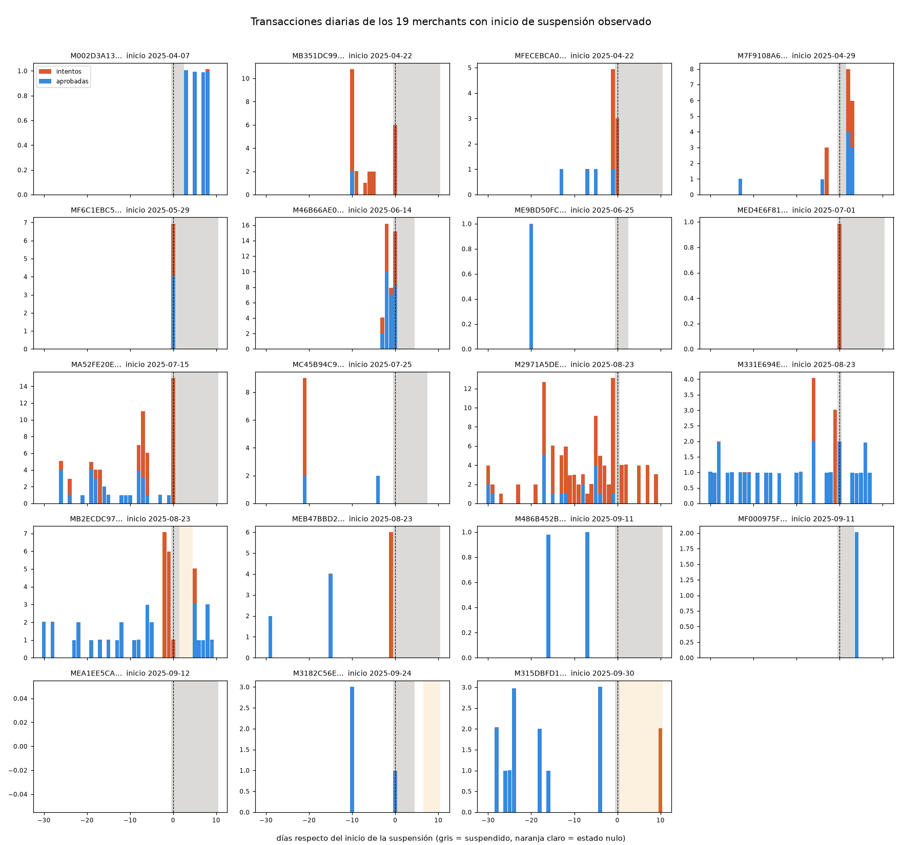

Clip · Data Science Challenge 2026
A qué merchant dejar pasar,
a cuál frenar.
Un score de riesgo por merchant, unido a 7,08 millones de transacciones, y las reglas de pre y post autorización que salen de él.
Leandro Garcia
Flechas o clic en los puntos. 15 diapositivas.
El problema de negocio
Unos pocos merchants riesgosos bajan la aprobación de todos.
Dónde se puede actuar sobre una transacción
1 · Modelo
Convertir is_suspended en un target justificado y entrenar.
2 · Score y join
Puntuar a cada merchant y unirlo a las transacciones por merchant_id.
3 · Reglas
Pre y post autorización, más paquetes para los emisores. KPIs del modelo y del negocio, por separado.
El resultado en una lámina
El score ordena bien al 5 % más riesgoso, y las reglas lo convierten en fraude evitado.
KPIs del modelo
| Suspensiones en el top 5 % | 10,6 de 12 |
| PR-AUC | 0,0216 · 60× la prevalencia |
| Validación | por merchant, 5 folds × 10 semillas |
KPIs del negocio
| Aprobación final | 93,17 % |
| TPV demorado por retención | 30,6 % · 2,1 días en promedio |
| Fraude sin ningún control | ≈ 28 % del $ |
Los KPIs de negocio se miden en las transacciones de octubre a diciembre, que no se usaron para entrenar. Supuestos: margen de Clip de 1 % y retención de 7 días.
Los datos y el target
Una fila por merchant: el primer día suspendido contra un día activo de los demás.
Las 4 variables del modelo · salen de la foto del merchant
aprobacion_7d
La menor entre la tasa de aprobación a 7 y a 30 días. Si no hay actividad reciente, la histórica.
me_txn_approval_rate_7d · _30d
aprobacion_historica
Tasa de aprobación de toda la vida del merchant.
me_lifetime_txn_approval_rate
sin_actividad_7d
Marca 1 si no hubo intentos en los últimos 7 días.
me_txn_approval_rate_7d nula
log_max_rechazos_30d
Logaritmo del peor día de rechazos (intentos menos aprobadas) en los 30 días hasta la foto.
me_attempted_txn_sum_1d · me_approved_txn_sum_1d
De dónde sale el target · las 19 suspensiones con inicio observado
Día por día: 12 muestran rechazos antes de la suspensión y 6 no muestran nada.

Intentos y aprobadas por día, respecto del inicio · gris = suspendido, naranja claro = estado nulo. Cada barra resume la actividad del día anterior.
12 · positivos
Los rechazos crecen hacia el inicio y llegan al máximo justo antes (M46B66AE, MA52FE20, M2971A5D). Son los casos que el modelo puede aprender.
6 · sin actividad sospechosa
Operan normal o casi no operan hasta la suspensión (por ejemplo M315DBFD, M3182C56, MEA1EE5C). Probable suspensión por documentación o cumplimiento: no hay nada que ver en la actividad, por eso quedan fuera.
1 · historia incompleta
M002D3A13 empieza el primer día de datos: no se sabe cómo llegó.
Decisiones del target · en qué se basan
Dos decisiones, cada una con su evidencia.
1 · ¿Qué fila es el positivo?
La del primer día suspendido: es donde está la actividad previa.
intentos rechazos · suma de los 12 positivos, por fila relativa al primer día suspendido
Los rechazos suben fila a fila y llegan al máximo en la fila 0, que resume hasta el día anterior. Después de la suspensión, el merchant casi no opera.
2 · ¿Cómo se eligen los negativos?
Un día activo por merchant, con la misma mezcla de fechas que los positivos.
positivos negativos · % de las filas por mes de la foto
Si los negativos salieran de cualquier fecha, el modelo podría aprender el calendario en vez del comportamiento. Con el sorteo ponderado, las dos curvas coinciden.
Qué se ve antes de una suspensión · las variables del modelo
Los 12 se parecen entre sí y no se parecen a los demás.
Variable 1 · aprobación reciente
Aprueban un cuarto de lo que aprueba el resto.
La peor entre la tasa a 7 y a 30 días. Sin actividad reciente, se usa la histórica.
Variable 2 · aprobación histórica
También venían peor de antes, pero la caída reciente es más fuerte.
Tasa de aprobación de toda la vida del merchant.
Variable 3 · peor día de rechazos en 30 días
Un día con muchos rechazos: la mediana de los positivos es 6,5; la del resto, 0.
Media de rechazos del peor día. Entra en logaritmo.
Variable 4 · sin actividad a 7 días
Ninguno de los 12 estaba inactivo; casi la mitad del resto sí.
Un merchant que no opera no puede mostrar el patrón: la marca ayuda al modelo a no confundirlo con uno sano.
El modelo · en qué se basa la elección
Una regresión logística de cuatro variables captura más que la regla y que el modelo con más variables.
Suspensiones capturadas en el 5 % de mayor score (de 12)
Cada merchant se predice con un modelo que no lo vio · 5 folds × 10 semillas · empates repartidos al azar
| Modelo | Variables | PR-AUC |
|---|---|---|
| Regla | sin entrenar | 0,0083 |
| A | 1 | 0,0060 |
| B | 4 | 0,0216 |
| C | 6 | 0,0234 |
| Prevalencia | 0,0004 |
Por qué B y no C
C suma ticket e intentos y no captura más: 9,9 contra 10,6. Se queda el modelo más simple.
Cómo se entrena
Regularización L2 fuerte (C = 0,1), pesos de clase balanceados, imputación por mediana y variables estandarizadas. El score no está calibrado: por eso los cortes son por percentil.
Score y join · en qué se basa el uso del score
Ordena a los merchants: el 5 % más riesgoso concentra el 36 % del fraude con el 14 % de las transacciones.
De cada 100 transacciones, cuántas son de cada tramo y cuánto del fraude traen
% de las transacciones % del fraude · tramos del percentil de riesgo del merchant
Donde la barra naranja supera a la azul, el tramo trae más fraude que su peso: 95–99 % (29,5 contra 11,7) y 99–100 % (6,3 contra 2,4).
Qué dice y qué no
Ordena bien por merchant (AUC 0,76) y casi nada por transacción (0,57). El score se entrena con suspensión, no con fraude. El tramo 0–50 % tiene una tasa de fraude alta (0,08 %): son merchants chicos que el score no ve.
Por qué cortes por percentil
La probabilidad no está calibrada: con 0,036 % de prevalencia y clases pesadas, 0,5 no significa nada. El percentil de riesgo es estable y se puede explicar a negocio.
Reglas de pre-autorización · en qué se basan los cortes
Se rechaza solo donde el fraude evitado supera lo que se pierde en margen.
Equilibrio por volumen del merchant y corte de riesgo · conviene si supera el margen (1 %)
riesgo ≥ 90 % ≥ 95 % ≥ 99 % · volumen: baja 1–9, media 10–99, alta ≥ 100 intentos en 30 días
La regla
Volumen bajo con riesgo ≥ 90 %: beneficio neto $0,24 M, el mayor de ese nivel.
Volumen medio con riesgo ≥ 99 %: equilibrio 2,3 %, beneficio $0,14 M.
Volumen alto: nunca rechazar. A 90 % se pierde el 24,9 % del TPV bueno.
Se sostiene en las dos mitades
| Mitad A | 1,35 % |
| Mitad B | 2,20 % |
| Sin el merchant de 256 fraudes | 1,71 % |
Reglas de post-autorización · en qué se basa cada retención
Se retiene el pago donde el fraude está más concentrado que el TPV.
Por regla · % del TPV retenido y % del $ de fraude que cubre
% del TPV retenido % del $ de fraude cubierto · la última fila no suma las anteriores: hay merchants en más de una
Por qué cada una
Revisión manual en volumen alto con riesgo ≥ 95 %: 244 merchants, donde rechazar costaría demasiado TPV.
CNP y monto alto: el 91 % de los merchants con CNP no está en el 5 % más riesgoso. Es fraude que el score no ve.
Costo
Los pagos buenos se demoran 2,1 días en promedio. Quedan sin control ≈ 28 % del $ de fraude, contra 58,5 % sin las reglas nuevas.
Bonus · paquetes de transacciones para los emisores
Tres paquetes: la tasa de fraude sube 5,7 veces del bajo al alto.
Tasa de fraude por paquete · % de las transacciones aprobadas
Los tres usan las reglas ya definidas: no hay un criterio nuevo que defender.
| Paquete | % txns | % TPV |
|---|---|---|
| Bajo | 84,0 % | 77,0 % |
| Medio | 13,6 % | 16,2 % |
| Alto | 2,4 % | 6,8 % |
Alto
Merchants de las reglas de rechazo o con riesgo ≥ 99 %.
Medio
Revisión, retención automática o riesgo entre 95 y 99 %.
Bajo
El resto. Su tasa de fraude es 31 % menor que la de todo lo aprobado: el emisor recibe un paquete más limpio.
Qué no hay que leer de más
Límites y supuestos.
Del modelo
- 12 positivos: un caso mueve 8 puntos de recall. Toda métrica es ruidosa.
- Sin período independiente: la regla, las variables y los cortes se eligieron mirando los mismos datos.
- Recall sobre suspensiones visibles: la empresa evalúa todas las de octubre a diciembre, incluidas las que no dejan rastro en la actividad.
- Suspensión no es fraude: el score ordena merchants, no transacciones.
De las reglas
- Margen de Clip de 1 % y retención de 7 días: supuestos, no están en los datos.
- Cortes elegidos sobre las mismas transacciones con las que se miden: la mejora real será algo menor.
- Fraude concentrado: en CNP, 138 merchants y los 10 primeros suman el 58 % del $. Sacar uno cambia los números.
- ≈ 523 merchants se puntúan con una fila anterior al 1 de octubre.
Transparencia
Cómo se usó la IA.
Qué hizo Claude Code
- Escribir y ejecutar los notebooks del pipeline: dataset, variables, modelo, score, reglas.
- Proponer alternativas y cuantificarlas con los datos.
- Redactar el registro de decisiones y esta presentación.
Qué se decidió y se revisó a mano
- El target, el día de la foto, qué casos quedan fuera y por qué.
- La lectura de cada resultado, incluidos los errores que aparecieron en el camino y se corrigieron.
- Los supuestos de negocio y los límites que se declaran.
Todas las decisiones, con sus pruebas, están en docs/decisions.md.
Clip · Data Science Challenge 2026